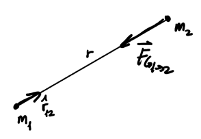
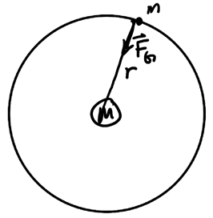
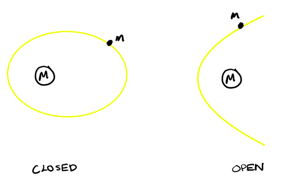
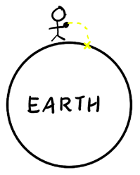

Universal Gravitation
Table of Contents
1. Law of Universal Gravitation
Newton's Law of Universal Gravitation states that \(\vec{F}_{G_{1\to 2}}\), the force of \(m_1\) acting on \(m_2\), is:
\begin{align} \boxed{\vec{F}_{G_{1\to 2}} = -\frac{Gm_1m_2}{r^2}\hat{r}_{12}} \end{align}where \(\hat{r}_{12}\) points from \(m_1\) to \(m_2\), and thus the force points from \(m_2\) to \(m_1\), like so:

Realize that gravitational force is always attractive because mass is always positive. By convention, \(\hat{r}\) always points from the attractor to the test mass. By Newton's 3rd Law, we also have a 3rd Law pair since \(\vec{F}_{G_{1 \to 2}} = -\vec{F}_{G_{2 \to 1}}\).
1.1. Gravitational Field
The existence of some interaction without physical contact implies the existence of some quantity in space that mediates the gravitational interaction. This quantity can be defined as the gravitational field, which is the force of gravity from an attractor of mass \(M\) to a "test mass" of unit mass:
\begin{align} \boxed{\vec{g}(r) = - \frac{GM}{r^2}\hat{r}} \end{align}1.2. Potential Energy
In the context of universal gravitation, our calculations for gravitational potential energy no longer apply. We can recalculate using the law of universal gravitation for our force:
\begin{align} \Delta U_G &= -\int_A^B \vec{F}_G \cdot \text{d}\vec{r} \notag \\ &= -\int_A^B - \frac{GMm}{r^2} \hat{r} \cdot \text{d}\vec{r} \notag \end{align}Since \(\hat{r} \cdot \text{d}\vec{r}\) is just the projection of \(\text{d}\vec{r}\) in the radial direction, so we can just call \(\hat{r} \cdot \text{d}\vec{r} = \text{d}r\) just the change in the radial direction:
\begin{align} \Delta U_G &= -GMm \int_A^B - \frac{\text{d}r}{r^2} \notag \\ &= -GMm\left ( \frac{1}{r_B} - \frac{1}{r_A} \right ) \notag \end{align}The gravitational potential energy \(U_G\) is defined with reference to some zero point. By convention, we set the zero reference point for potential energy at any particular point to be infinity (i.e. \(U_G(\infty) = 0\)), thus:
\begin{align} \boxed{U_G(r) = -\frac{GMm}{r}} \end{align}2. Satellite Orbit
2.1. Circular Orbit
Consider a mass \(m\) orbiting an attractor with mass \(M\):

If gravity is the only force present, we find that the acceleration is purely centripetal, so the object is in uniform circular motion. By Newton's second law, we have:
\begin{align} \frac{GmM}{r^2} = m\frac{v_{\text{orb}}^2}{r} \notag \end{align}Therefore, the orbital speed \(v_{\text{orb}}\) is:
\begin{align} v_{\text{orb}} = \sqrt{\frac{GM}{r}} \end{align}The angular speed is \(\omega = \frac{v}{r}\), so we have:
\begin{align} \omega_{\text{orb}} = \frac{\sqrt{GM}}{r^{\frac{3}{2}}} \end{align}We can also find the period, the time required to complete one full revolution, which can be found as either the circumference over the orbital velocity, or one revolution (\(2\pi\) radians) over the angular speed:
\begin{align} T = \frac{2\pi r}{v_{\text{orb}}} = \frac{2\pi}{\omega_{\text{orb}}} \end{align}Example: Geostationary satellite
We want to calculate how high a satellite must orbit the Earth in order for it to remain above the same point. For this to occur, it must have the same time period as Earth about its own axis. Thus, we can write:
\begin{align} T &= \frac{2 \pi r^{\frac{3}{2}}}{\sqrt{GM_E}} \notag \\ r &= \left ( \frac{T \sqrt{GM_E}}{2\pi} \right ) ^{\frac{2}{3}} \notag \end{align}Therefore, the altitude of the orbiting satellite is this radius minus the radius of the earth, \(R_E\):
\begin{align} H = r - R_E \approx 35800 \text{ km} \notag \end{align}2.2. Escape Speed
There is a particular speed, called the escape speed, such that an object would leave the orbit of another object. Consider the total mechanical energy of an object in orbit:
\begin{align} E &= U_G + K \notag \\ &= -\frac{GMm}{r} + \frac{1}{2}mv^2 \notag \end{align}In celestial mechanics, the total mechanical energy determines the type of orbit:
- \(E < 0\): closed orbit
- \(E = 0\): open orbit, parabolic
- \(E > 0\): open orbit, hyperbolic

The critical point is when \(E = 0\):
\begin{align} E &= 0 \notag \\ \frac{1}{2} m v^2_{\text{esc}} &= \frac{GMm}{r} \notag \\ \end{align}Thus, the escape speed is:
\begin{align} \boxed{v_{\text{esc}} = \sqrt{\frac{2GM}{r}}} \end{align}We can then say that if \(v < v_{\text{esc}}\), then we have a closed orbit, otherwise if \(v \geq v_{\text{esc}}\), then we have an open orbit.
2.3. Throwing Objects
A natural question concerning orbits is, why doesn't an object thrown an Earth enter an orbit? And why isn't the path of the object as described in kinematics elliptical?
A ball thrown in the air does not go into orbit because the Earth is not a point mass:

When we throw an object, it doesn't orbit the Earth because the Earth's radius intercepts the orbit and stops it. Additionally, the previously described parabolic trajectory is only an approximation of the elliptical path it would take if it were in orbit.
2.4. Apparent Weightlessness
"True" weightlessness would require gravitational field to be zero, which doesn't exist. Instead, weightlessness felt by astronauts in orbit is a type of apparent weightlessness. Apparent weightlessness occurs when you feel no response from your surroundings; in other words, the normal force is zero.
This occurs when both you and your surroundings are in free fall at the same time. This is the scenario for astronauts in spacecraft feeling weightlessness in outer space: both the spacecraft and astronaut are in free fall around the Earth.